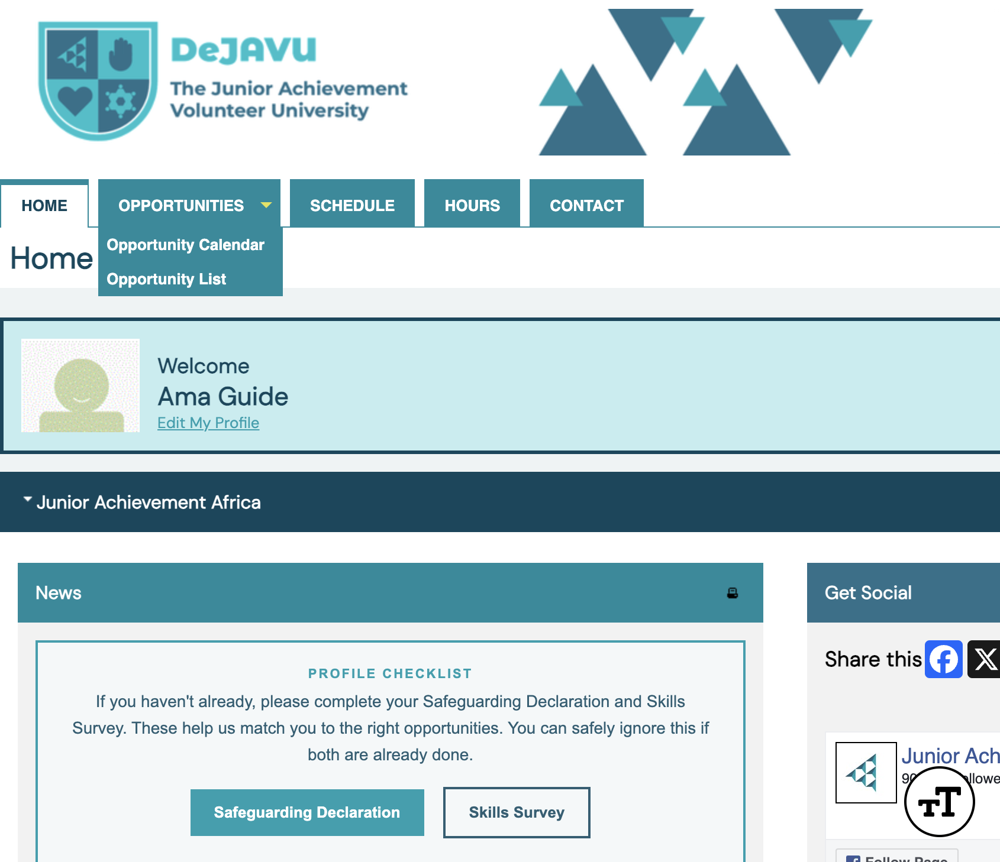
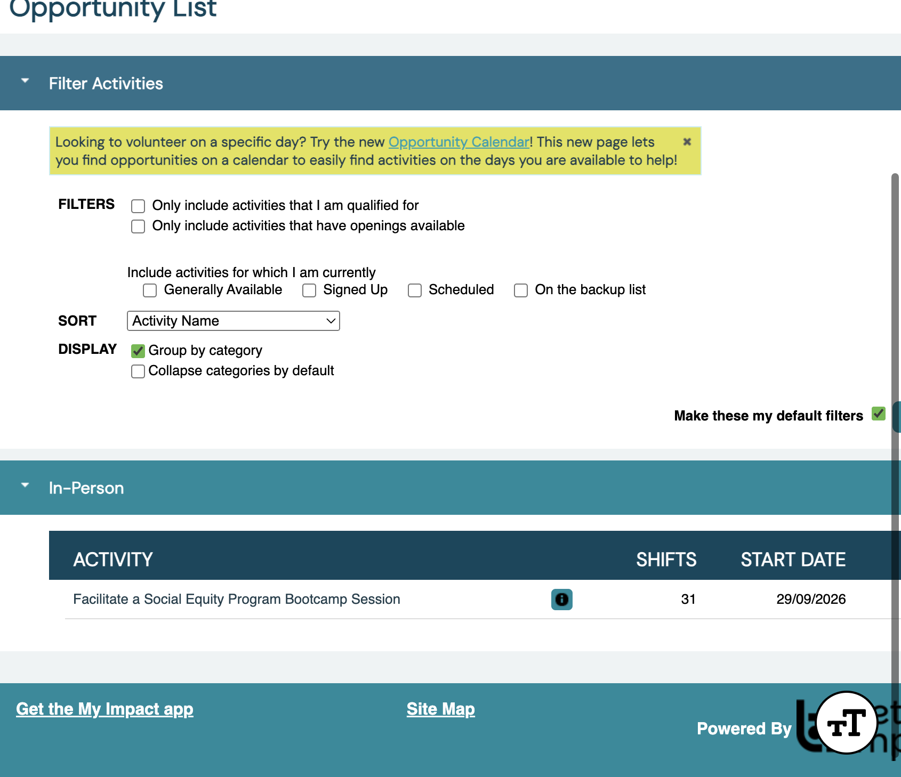
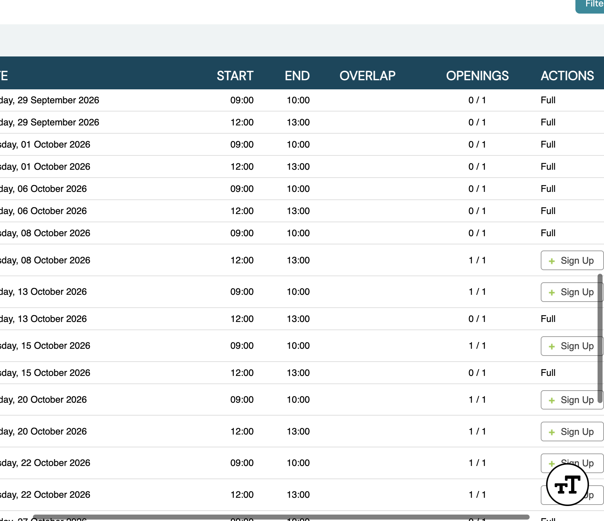
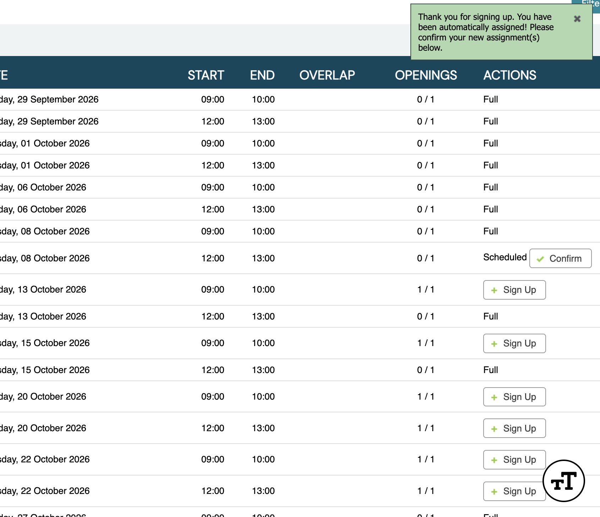
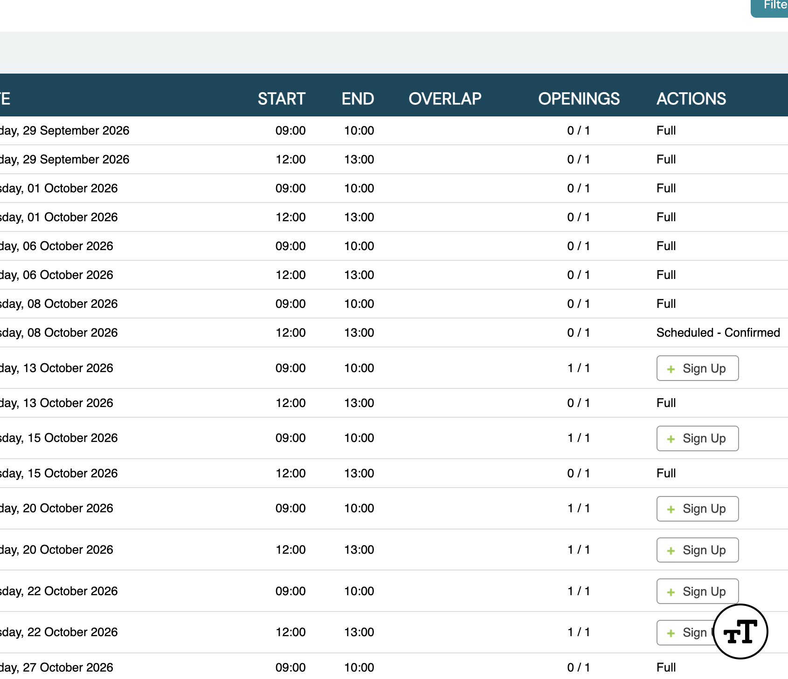

Volunteer guide
Audience · VolunteerApply for Opportunities
Browse open activities and sign up for shifts that match your skills and availability. You can only see Opportunities after you complete the Safeguarding Declaration.
Path: Opportunities → Opportunity List
Complete Safeguarding first
Opportunities appear in the top menu only after your Safeguarding Declaration is submitted and passed. If you still see a Profile Checklist asking for Safeguarding, finish that guide first.
 Opportunities
Opportunities
Need the declaration? See Complete Safeguarding.
Open Opportunities
Click Opportunities in the top menu. Choose Opportunity List to browse by activity name, or Opportunity Calendar to find shifts by date.

Opportunity ListThis guide uses the List view. Calendar is useful when you already know which dates you can help.
Pick an activity
On the Opportunity List, activities are grouped by category (for example In-Person). Click the activity name you want — such as Facilitate a Social Equity Program Bootcamp Session.

Open this activityRead the activity details
Review the description, language, dates, location, and timezone. Under Qualifications you should see Safeguarding Must be Passed — this is why the declaration is required.
 Required qualification
Required qualification
Sign up for a shift
Scroll to the shifts table. Rows marked Full have no openings left. Find a date and time that works for you, then click + Sign Up.

Sign UpConfirm your assignment
After you sign up, a message appears: “Thank you for signing up. You have been automatically assigned! Please confirm your new assignment(s) below.”
The shift shows as Scheduled. Click Confirm, then confirm again in the dialog.

Confirm
Scheduled · ConfirmedYour confirmed shifts also appear under Schedule in the top menu.